平节理模型
平节理模型可安装在球-球和球-面片接触上，在命令和 FISH 中名称为 flatjoint。
引言
平节理接触及其相应的平节理材料见 图 1（Figure 1）。平节理接触模型提供有限尺寸、线弹性、且可为粘结或摩擦的界面的宏观行为，该界面可承受部分损伤。平节理材料模仿类似大理岩的棱角状互锁颗粒的微观结构。本文件给出模型公式。最初的二维和三维平节理模型见 [Potyondy2012a]、[Potyondy2012b] 和 [Potyondy2013]。本描述同时定义二维和三维平节理模型，并取代此前所有描述。平节理材料的创建与实验室试验见 [Potyondy2017] 中“示例材料 2：平节理材料示例”一节，该文献随 材料建模支持（material-modeling support） 包提供。检验单个平节理接触以及互锁颗粒行为的测试问题见 [Potyondy2016]，该文献包含在 材料建模支持（material-modeling support） 包的文档中。
公式推导首先描述平节理接触及其相应的平节理材料，然后描述平节理界面。随后给出平节理接触模型的活动-删除准则、力-位移定律、能量分区、属性、方法和回调事件，以及确定稳定时间步所需的刚度。最后一小节给出力-位移定律中使用的单元法向力和弯曲力矩表达式。
行为概要
行为概要先描述平节理材料，然后描述平节理界面。
平节理材料
平节理接触及其相应的平节理材料见 图 1（Figure 1）。平节理接触模型提供有限尺寸、线弹性、且可为粘结或摩擦的界面的宏观行为，该界面可承受部分损伤。平节理材料在 [Potyondy2017] 中定义为这样的颗粒集合体：在材料最终化阶段结束时，所有间隙小于或等于安装间隙的颗粒-颗粒接触上都存在平节理接触模型；其余颗粒-颗粒接触以及后续运动过程中可能形成的新颗粒-颗粒接触则赋予线性接触模型。平节理材料模仿类似大理岩的棱角状互锁颗粒的微观结构。

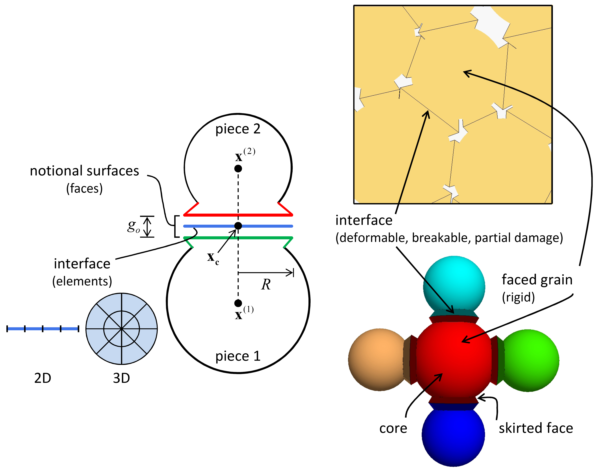
图 1：平节理接触（左）与平节理材料（右）。
平节理接触模型提供有限尺寸、线弹性、且可为粘结或摩擦的界面的宏观行为，该界面可承受部分损伤（见 图 2（Figure 2））。界面被离散为单元。每个单元或粘结或不粘结，每个粘结单元的破坏都会给界面带来部分损伤。粘结单元的行为为线弹性，直至超出强度极限、粘结破坏而使单元变为不粘结；不粘结单元的行为为线弹性并伴随摩擦，滑动通过施加于剪切力的 Coulomb 限制来实现。每个单元承受一个力和一个力矩，它们服从下文所述的力-位移定律；而平节理界面的力-位移响应是一种涌现行为，包括从完全粘结状态演化为完全无粘结的摩擦状态。

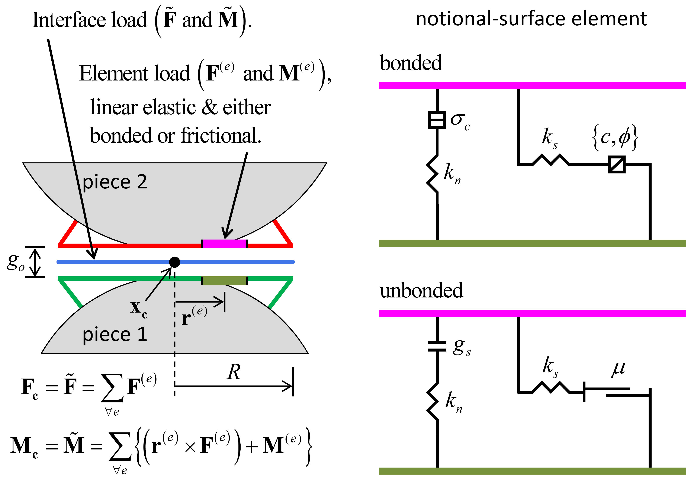
图 2：平节理模型的行为与流变组分。
平节理接触模拟两个名义表面之间界面的行为，每个名义表面与其所属体的一个片体刚性连接。平节理材料由以平节理接触连接的体（球、刚性团簇或墙）组成，因而每个体的有效表面由其各片体的名义表面确定，这些名义表面在每个平节理接触处与相接触片体的名义表面发生作用。名义表面称为面，它们{二维中为线段；三维中为圆盘}。
以下关于平节理材料的描述适用于体为球的情形；但平节理模型可安装在球-球和球-面片接触上。我们把平节理材料中的球称为面状颗粒，每个颗粒由{二维中为圆形；三维中为球形}核芯和若干带裙边的面组成。当面状颗粒在堆积球集合的球-球接触上安装平节理模型时即被创建（见 图 3（Figure 3））。每相邻两组面之间存在一个界面，并被离散为单元，每个单元或粘结或不粘结。每个粘结单元的破坏都会给界面带来部分损伤，每次破坏事件称为一条裂纹（见 图 4（Figure 4））[1]。若平节理接触处的相对位移大于平节理直径，则相邻的面可能被移除（因为该接触可能被删除），从而使相应球局部变为{二维中为圆形；三维中为球形}；若这些球再次接触，其行为将是{二维中为圆形；三维中为球形}表面之间的界面行为（前提是新接触被赋予 线性（linear） 接触模型）。

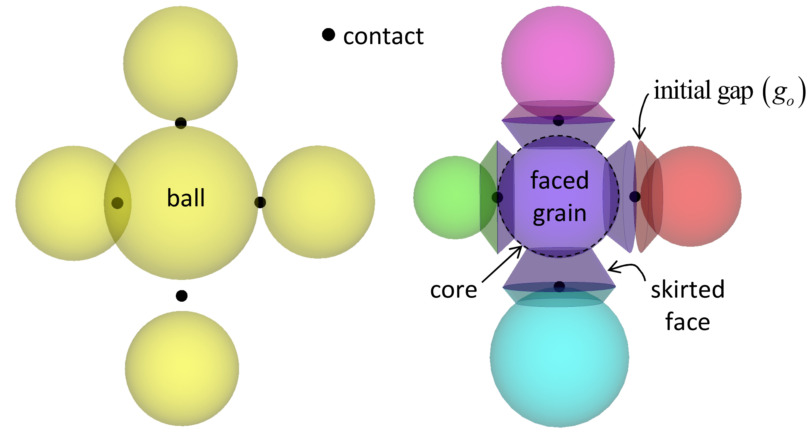
图 3：面状颗粒的创建，示出堆积球集合（左）和初始面状颗粒集合（右）。

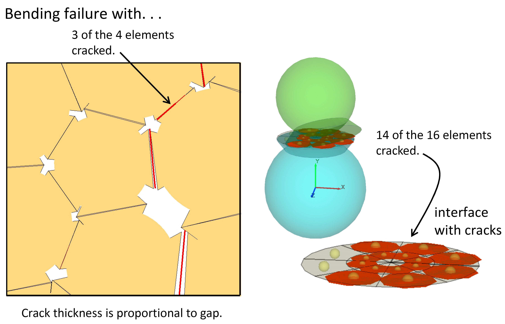
图 4：部分损伤的平节理材料，面状颗粒上的裂纹以红色/蓝色表示拉伸/剪切破坏。
hackDP-1
平节理界面
平节理模型的界面始终以接触面为中心并随之转动， 从而使界面坐标系与接触面坐标系重合。 界面间隙 \(\left(g,{\rm \; }g>0{\rm \; is\; open}\right)\) 按 表面间隙和相对弯曲转动向量表示如下。[2] 名义表面的相对运动在界面上逐点变化，用 符号 \(\stackrel{\frown}{\delta}\) 和 \(\stackrel{\frown}{\theta}\) 表示，它们 与接触位置处片体表面的相对运动有关：
其中相对位移和转动增量（\(\Delta {\pmb δ}\) 和 \(\Delta {\pmb θ}\)）来自“接触解析（Contact Resolution）”一节中的 该（this） 公式。只有三维模型的相对剪切位移（\(\Delta \stackrel{\frown}{{\pmb δ }}_{\mathbf s}\)）在界面上逐点变化（当相对扭转转动不为零时）；因此，帽子符号只用于该量。在本节余下部分，我们先对二维模型、再对三维模型描述运动学变量和界面离散化。
二维平节理模型的界面是宽度为 \(2R\)、厚度为单位长度的矩形。位于界面上的点 \(\mathbf{x}\) 的位置 由其相对位置 \({\mathbf r}={\mathbf x}-{\mathbf x}_{\mathbf c}\) 表示。界面 离散化（见 图 5（Figure 5））由径向等长单元数（\(N_{r}\)）控制。每个单元的面积和形心位置 分别记为 \(A{\kern 1pt} ^{(e)}\) 和 \({\mathbf x}^{(e)}\)。这些量 由下式给出
量 \(A{\kern 1pt} ^{(e)}\) 和 \(\rho ^{\left(e\right)}\) 在模拟过程中 不变；因此它们在安装平节理后的第一个循环步中设定并存储。

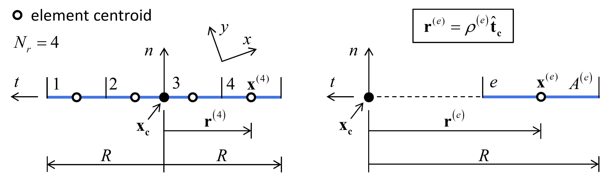
图 5：二维平节理模型的界面离散化，示出单元编号约定 （左）和典型单元的参数化（右）。
二维平节理模型的界面间隙（见 图 6（Figure 6））由下式给出
其中 \(g_{s}\) 是表面间隙，\({\pmb θ}_{\mathbf b}\) 是“接触解析（Contact Resolution）”一节中 该（this） 公式的相对 弯曲转动向量。在 \(\gamma\) 系中表示时，界面间隙 只随 \(\gamma\) 变化，并与 \(g_{s}\) 和 \(\theta _{bk}\) 有关。 界面间隙不受相对剪切运动影响（这是小应变 近似）。

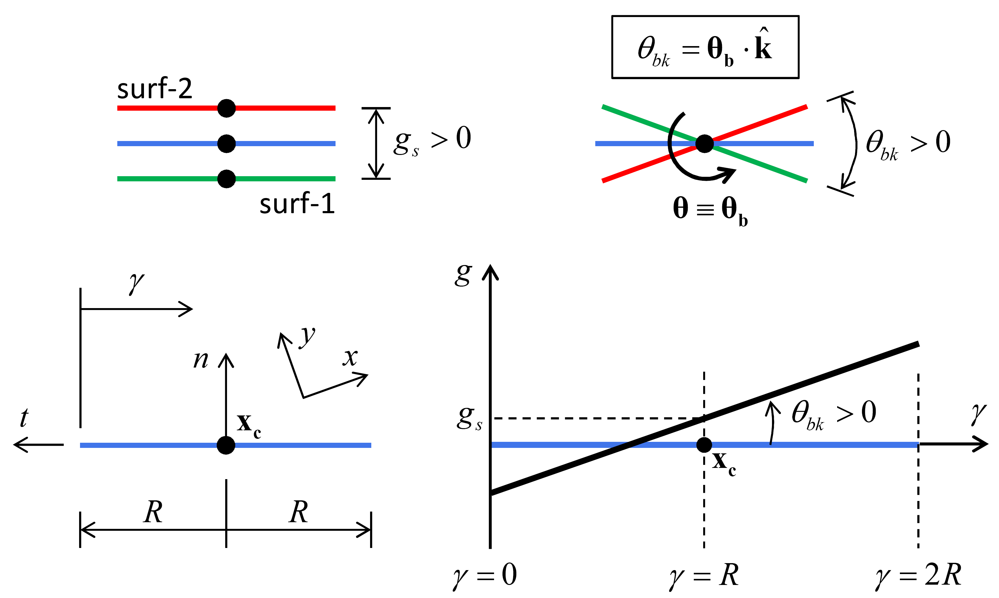
图 6：二维平节理模型在图像顶部发生运动时对应的界面间隙。
对二维平节理模型，跟踪以下界面相对运动分量：
三维平节理模型的界面是直径为 \(2R\) 的圆盘。位于界面上的点 \(x\) 的位置 由其相对位置 \({\mathbf r}={\mathbf x}-{\mathbf x}_{\mathbf c}\) 表示。界面离散化（见 图 7（Figure 7））由径向（\(N_{r}\)）和周向（\(N_{\alpha }\)）方向的单元数控制。每个单元的 面积和形心位置分别记为 \(A{\kern 1pt} ^{(e)}\) 和 \({\mathbf x}^{(e)}\)。 这些量由下式给出
其中 \(r\) 和 \(\alpha\) 项已省略上标 \((e)\) 记法，它们由下式给出
其中 \({\rm floor}\left(x\right)=\left\lfloor x\right\rfloor\) 是不大于 \(x\) 的最大整数。量 \(A{\kern 1pt} ^{(e)}\)、 \(s^{\left(e\right)}\) 和 \(t^{\left(e\right)}\) 在模拟过程中不变； 因此它们在安装平节理后的第一个循环步中设定并存储。

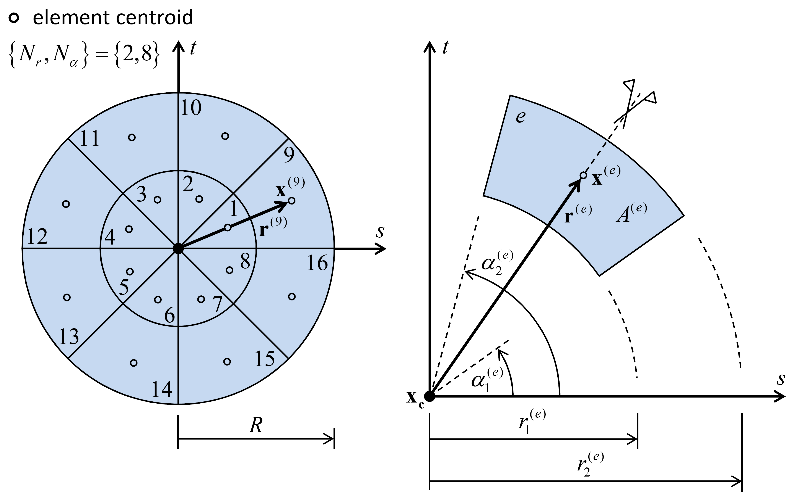
图 7：三维平节理模型的界面离散化，示出单元编号约定 （左）和典型单元的参数化（右）。
三维平节理模型的界面关联两个坐标系（见 图 8（Figure 8））：与接触面坐标系重合的 \(nst\) 系，以及与接触面坐标系 如下相关的 \(n\xi \eta\) 系。相对弯曲转动向量（\({\pmb θ }_{\mathbf b}\)） 使 \(n\xi \eta\) 坐标系定向，使 \(\xi\) 与 \({\pmb θ }_{\mathbf b}\) 对齐（与 \(s\) 正轴成 \(\beta _{s}\) 角）且 \(\hat{\mathbf n}_{\mathbf c} =\hat{\pmb \xi }\times \hat{\pmb \eta }\)。 位于界面上的点 \(\pmb x\) 的相对位置可用 下列关系在任一坐标系中表示：
这两个坐标系之间对位于界面上的向量 \(\mathbf S\) 的映射 由下列关系给出：
三维平节理模型的界面间隙（见下图）由下式给出
其中 \(g_{s}\) 是表面间隙，\({\pmb θ}_{\mathbf b}\) 是“接触解析（Contact Resolution）”一节中 该（this） 公式的相对 弯曲转动向量。在 \(n\xi \eta\) 系中表示时，界面 间隙只随 \(\eta\) 变化，并与 \(g_{s}\) 和 \(\theta _{b\xi }\) 有关。 界面间隙不受相对剪切位移或相对扭转 转动影响（这是小应变近似）。界面间隙按 \(s\)、\(t\) 和 \(\beta_{s}\) 表示 （把式 (8) 的映射代入 (9)）：

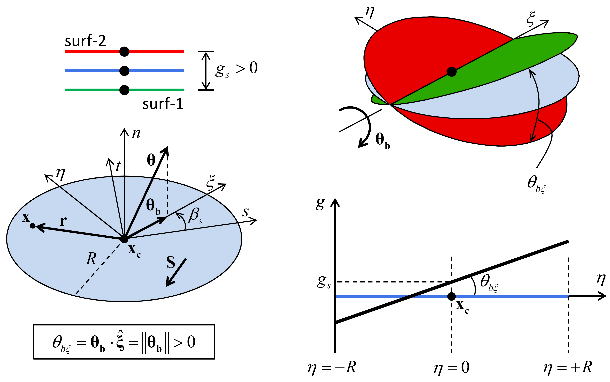
图 8：三维平节理模型在图像顶部发生运动时对应的界面间隙。
对三维平节理模型，跟踪以下界面相对运动分量：
活动-删除准则
若平节理单元已粘结或间隙为负，则该单元上可产生力。接触保持活动，直到名义表面中心之间的距离大于平节理 直径（\(\sqrt{g_{s} ^{2} +\left(\delta _{ss} \right)^{2} +\left(\delta _{st} \right)^{2} } >2R\)）。此后接触被视为非活动，并可能被删除。 若片体相互重叠，非活动的平节理接触可变为活动；此时 名义表面会被初始化。
力-位移定律
平节理模型的力-位移定律更新作用在接触位置、并在两个片体上以大小相等、方向相反方式 作用的接触力和力矩（\({\mathbf F}_{\mathbf c} =\tilde{\mathbf F}\) 和 \({\mathbf M}_{\mathbf c} =\tilde{\mathbf M}\)）（见“接触模型框架”专题中的 该图（this figure））。 这是通过把界面离散为单元并为每个单元给出力-位移 定律来实现的，从而使平节理界面的力-位移响应成为 一种涌现行为。本节描述平节理单元的力-位移定律。
每个单元承受一个力和一个力矩（\({\mathbf F}^{\left(e\right)}\) 和 \({\mathbf M}^{(e)}\)），它们作用在单元形心处，并以大小相等、方向相反的方式 作用在名义表面上。单元的力和力矩在界面中心产生一个静力 等效的力和力矩（界面中心与接触位置重合——见 图 9（Figure 9） 和 图 10（Figure 10）），由下式给出
其中 \({\mathbf r}^{\left(e\right)} ={\mathbf x}^{(e)} -{\mathbf x}_{c}\) 是相对位置，\(x^{(e)}\) 是单元 \((e)\) 的形心位置。对 二维模型，式 (12) 变为
把式 (2) 中的 \({\mathbf r}^{\left(e\right)}\) 代入式 (12)， 并用其法向和剪切分量（定义见下文）表示单元力。

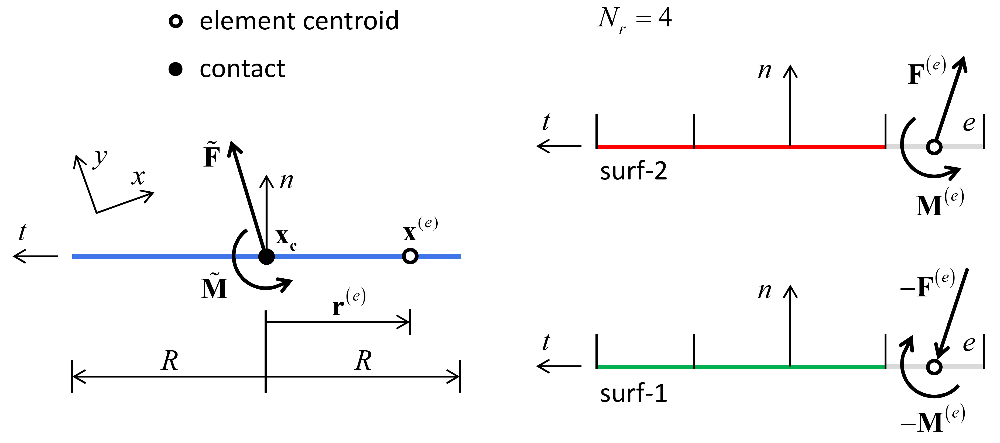
图 9：作用在典型二维单元上的力和力矩（右），以及用于确定它们对 界面中心处力和力矩贡献的形心相对位置 向量（左）。

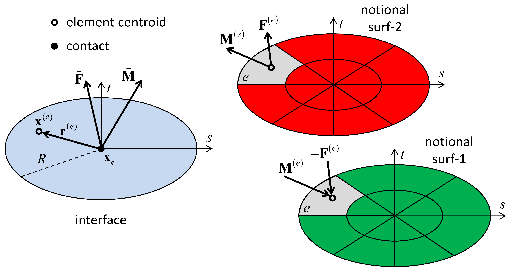
图 10：作用在典型三维单元上的力和力矩（右），以及用于确定它们对 界面中心处力和力矩贡献的形心相对位置 向量（左）。
平节理单元的力-位移定律更新单元力和力矩 （\({\mathbf F}^{\left(e\right)}\) 和 \({\mathbf M}^{(e)}\)），并可能 改变单元粘结状态（\(B^{(e)}\)）。单元力被分解为法向 力和剪切力，单元力矩被分解为扭转力矩和弯曲力矩：
其中 \(F_{n}^{(e)} >0\) 表示拉伸，\(M_{t}^{\left(e\right)} >0\) 见 “接触解析（Contact Resolution）”一节中的 该（this） 图。剪切 力和弯曲力矩位于界面上，并在界面坐标 系中表示：
对三维模型，一个简化假定[3]给出 \(M_{t}^{\left(e\right)} \equiv 0\)。\(F_{n}^{\left(e\right)}\) 和 \({\mathbf M}_{\mathbf b}^{\left(e\right)}\) 通过对作用在 单元上的法向应力积分来更新，\({\mathbf F}_{\mathbf s}^{(e)}\) 则根据单元形心处 相对剪切位移增量的有效部分增量更新。
单元法向应力和剪应力由下式给出
其中 \(\sigma ^{(e)} >0\) 表示拉伸，应力作用在单元形心处。 界面法向应力 \(\left(\sigma ,{\rm \; }\sigma >0{\rm \; is\; tension}\right)\) 由下式给出
其中 \(k_{n}\) 是法向刚度，\(g\) 是{二维中式 (3)；三维中式 (10)}的界面间隙。界面法向 应力与间隙成正比，间隙为正的未粘结区域不承受 荷载。只有间隙为正的粘结区域才承受拉伸荷载，而 间隙为负处（无论其粘结状态如何）都承受压缩荷载。 间隙和法向应力在界面上连续，间隙可在单元内 改变符号；但粘结在界面上并不连续，因为每个 单元或粘结或不粘结（见下文）。

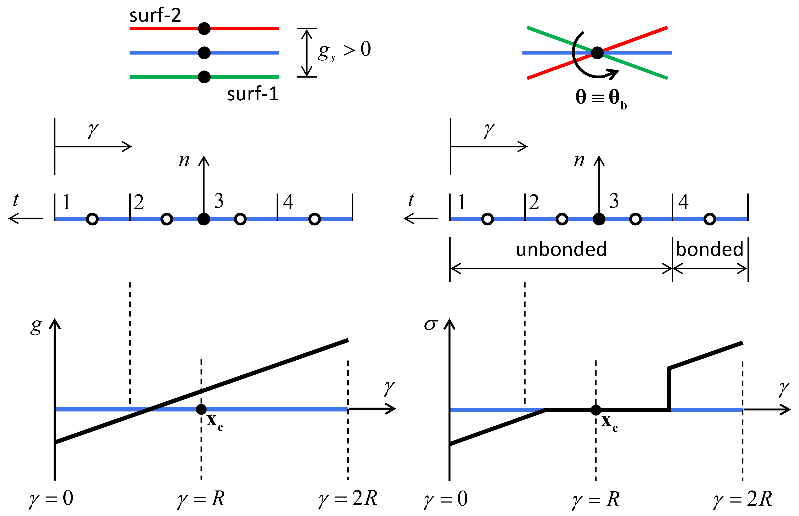
图 11：四单元二维平节理模型在图像顶部发生运动时，间隙、法向应力和粘结状态的变化。
在接触上安装平节理模型时，初始化：
在接触上安装平节理模型后的第一个循环步中，固定 属性：
并初始化：
第一个条件确定了名义表面相对于片体的初始位置和方位。初始表面间隙（\(g_{o}\)，\(g_{o} >0\) 表示张开） 是有限尺寸名义表面之间沿 图 1（Figure 1） 中虚线方向量得的距离。表面间隙 \((g_{s} =g_{o} +\sum \Delta \delta _{n}\)，\(g_{s} >0\) 表示张开）是片体表面的累积相对法向 位移。
平节理单元的力-位移定律由以下步骤组成（见 图 12（Figure 12） 和 图 13（Figure 13））。
更新 \(F_{n}^{(e)}\)：
(21)\[F_{n}^{(e)} =\int _{e}\sigma dA\]其中 \(\sigma\) 是式 (17) 中的界面法向应力， 积分在单元（\(e\)）上进行。该积分的解析表达式 （见下文“单元法向力与弯曲 力矩的表达式”一节）用于更新 \(F_{n}^{(e)}\)，进而用于 更新 \(\sigma ^{(e)} ={F_{n}^{\left(e\right)} \mathord{\left/ {\vphantom {F_{n}^{\left(e\right)} A^{\left(e\right)} }} \right. } A^{\left(e\right)} }\)。若单元已粘结且超出抗拉强度极限 （\(\sigma ^{(e)} >\sigma _{c}\)），则使粘结发生拉伸破坏 \(\left(B^{(e)} =1,\; \; \left\{F_{n}^{(e)} ,F_{ss}^{(e)} ,F_{st}^{(e)} \right\}=0\right)\)，触发 bond-break 回调事件，并跳过下一步。 若单元未粘结且 \(\sigma ^{(e)} \ge 0\)，则把单元剪切力设为零 \(\left(\left\{F_{ss}^{(e)} ,F_{st}^{(e)} \right\}=0\right)\)，并跳过下一步。
按如下方式更新 \(F_{s}^{(e)}\)。计算试验单元剪切力：
(22)\[\begin{split}\begin{array}{ll} {\mathbf F}_{\textbf s}^{(e)'} = {\textbf F}_{\textbf s}^{(e)} -k_{s} A^{(e)} \Delta \stackrel{\frown}{\pmb δ}_{s}^{(e)'} & \left[ F_{ss}^{(e)'} =F_{ss}^{(e)} -k_{s} A^{(e)} \Delta \stackrel{\frown}{\delta }_{ss}^{(e)'} ,\; \; F_{st}^{(e)'} =F_{st}^{(e)} -k_{s} A^{(e)} \Delta \stackrel{\frown}{\delta }_{st}^{(e)'} \right] \\[5mm] {\rm with} \ \ \Delta\stackrel{\frown}{\pmb δ}_{\textbf s}^{(e)'} = \alpha\Delta\stackrel{\frown}{\pmb δ}_{\textbf s}^{(e)} & \left[\Delta \stackrel{\frown}{\delta }_{ss}^{(e)'} =\alpha \Delta \stackrel{\frown}{\delta }_{ss}^{(e)} ,\; \; \Delta \stackrel{\frown}{\delta }_{st}^{(e)'} =\alpha \Delta \stackrel{\frown}{\delta }_{st}^{(e)} \right] \end{array} \\[3mm] \alpha =\left\{\begin{array}{l} {\frac{g_{1}^{(e)} }{g_{1}^{(e)} -g_{0}^{(e)} } ,\qquad {\rm unbonded\; and\; }g_{0}^{(e)} >0{\rm \; and\; }g_{1}^{(e)} <0} \\[3mm] {\qquad 1,\qquad {\rm otherwise}} \end{array}\right.\end{split}\]其中 \(\Delta \stackrel{\frown}{\pmb δ }_{\mathbf s}^{(e)'}\) 是单元形心处相对剪切位移增量中的有效 部分。若单元已粘结，则整个增量都有效；若单元未 粘结，则只有在 \(g^{\left(e\right)} <0\) 期间发生的增量部分才有效；\(\Delta \stackrel{\frown}{\pmb δ }_{\mathbf s}^{(e)}\) 是在单元形心处计算的 式 (1) 中的 \(\Delta \stackrel{\frown}{\pmb δ }_{\mathbf s}\)，而时间步开始和结束时的 \(g^{\left(e\right)}\) 分别记为 \(g_{0}^{(e)}\) 和 \(g_{1}^{(e)}\)。试验单元剪应力：
(23)\[\tau ^{(e)'} ={\left\| {\mathbf F}_{\mathbf s}^{(e)'} \right\| \mathord{\left/ {\vphantom {\left\| {\mathbf F}_{\mathbf s}^{(e)'} \right\| A^{(e)} }} \right. } A^{(e)} } .\]此后按下述粘结状态分别处理。
- 未粘结。抗剪强度 \(\tau _{c}^{(e)} =-\mu \sigma ^{(e)}\)。若 \(\left|\tau ^{(e)'} \right|\le \tau _{c}^{(e)}\)，则 \({\mathbf F}_{\mathbf s}^{(e)} ={\mathbf F}_{\mathbf s}^{(e)'}\)；否则施加抗剪强度 极限 \(\left({\mathbf F}_{\mathbf s}^{(e)} =\tau _{c}^{(e)} A^{(e)} \left({{\mathbf F}_{\mathbf s}^{(e)'} \mathord{\left/ {\vphantom {{\mathbf F}_{\mathbf s}^{(e)'} \left\| {\mathbf F}_{\mathbf s}^{(e)'} \right\| }} \right. } \left\| {\mathbf F}_{\mathbf s}^{(e)'} \right\| } \right)\right)\)，这意味着发生了滑动，滑动能量按 式 (28) 更新。若滑动状态已改变，则触发 :lcmd:` slip_change ` 回调事件。
- 已粘结。抗剪强度 \(\tau _{c}^{\left(e\right)} =c-\sigma ^{\left(e\right)} \tan \phi\)。若 \(\left|\tau ^{(e)'} \right|\le \tau _{c}^{(e)}\)，则 \({\mathbf F}_{\mathbf s}^{(e)} ={\mathbf F}_{\mathbf s}^{(e)'}\)；否则表示已超出抗剪强度极限。使粘结发生剪切破坏（通过设置 \(B^{(e)} =2\)、\(\left\{F_{ss}^{(e)} ,F_{st}^{(e)} \right\}=0\) 并按步骤 1 重新计算 \(F_{n}^{\left(e\right)}\)），并触发 :lcmd:` bond_break ` 回调事件。
更新 \(M_{b}^{(e)}\)：
(24)\[M_{b}^{(e)} =-\int _{e}r\sigma dA\]其中 \(\sigma\) 是式 (17) 中的界面法向应力，\(r\) 是 相对单元形心的力臂，积分在 单元（\(e\)）上进行。该积分的解析表达式（见下文 “单元法向力与弯曲力矩的表达式”一节）用于更新 \(M_{b}^{(e)}\)。

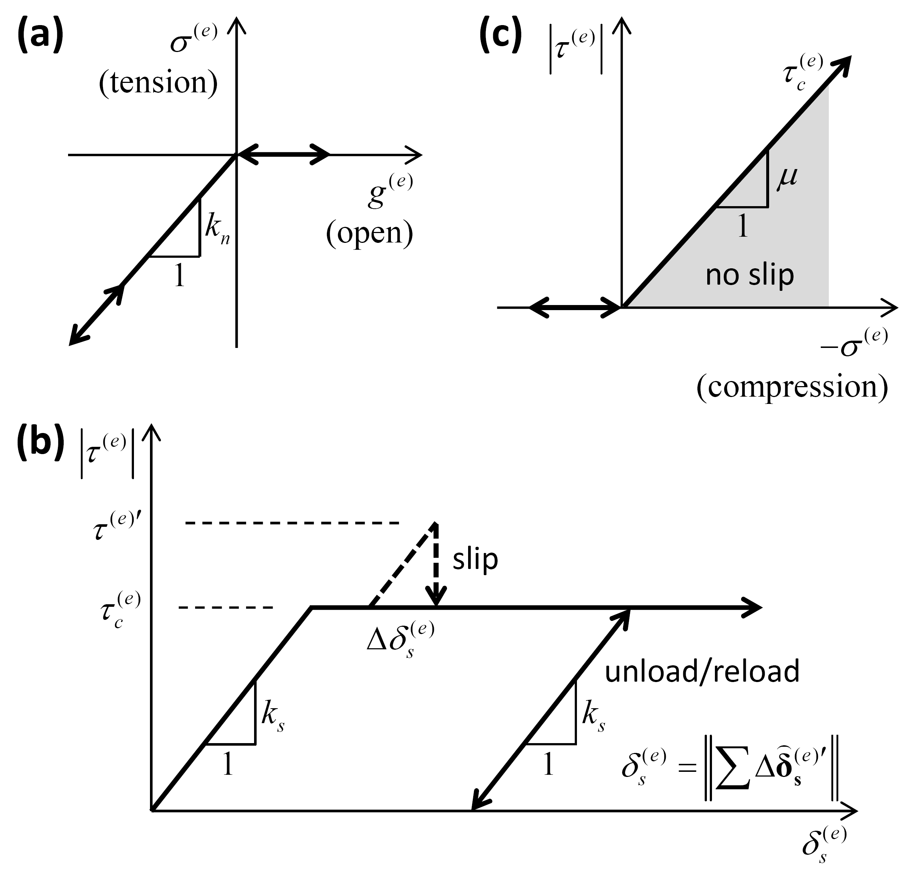
图 12：未粘结平节理单元的力-位移定律：(a) 法向应力与 单元间隙关系；(b) 剪应力与相对剪切位移关系；(c) 滑动包络。

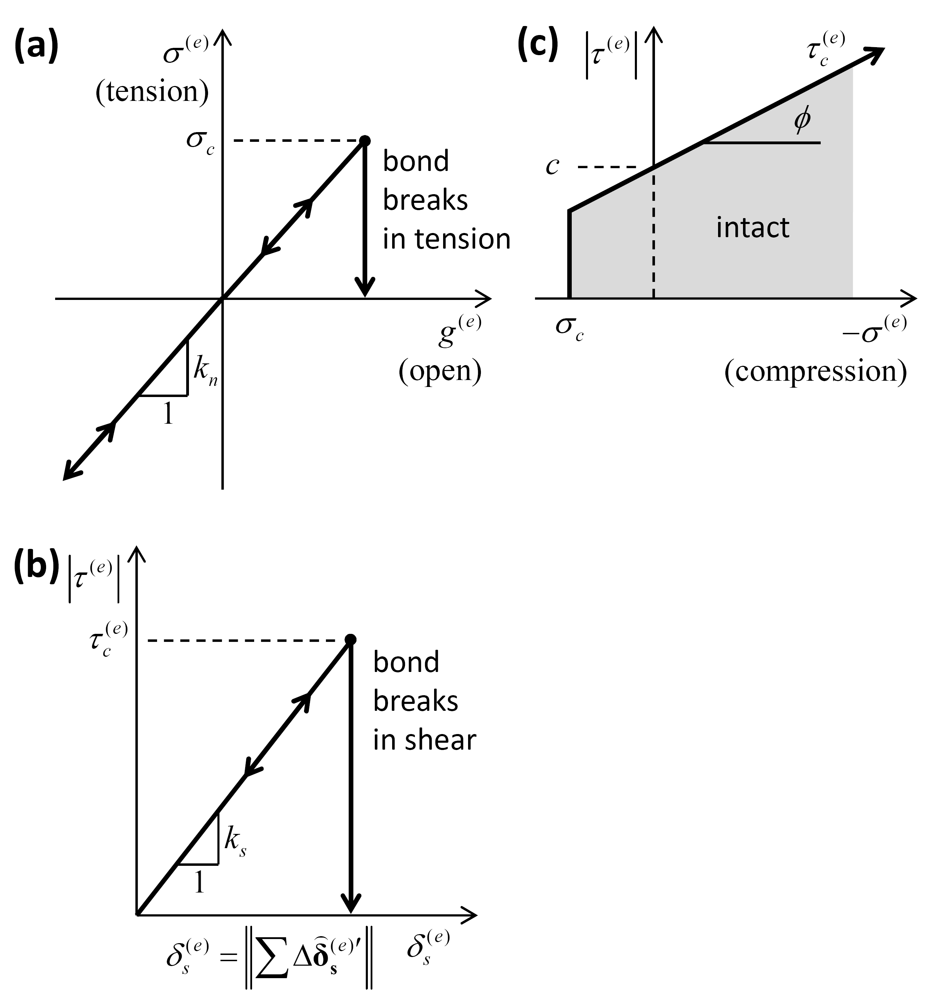
图 13：粘结平节理单元的力-位移定律：(a) 法向应力与单元 间隙关系；(b) 剪应力与相对剪切位移关系；(c) 破坏包络。
能量分区
平节理模型提供两个能量分区：
- 储存在弹簧中的应变能 \(E_{k}\)；以及
- 滑动能量 \(E_{\mu}\)，定义为摩擦滑动耗散的总能量。
平节理中的应变能由各单元的应变能求和得到：
每个单元的应变能在力-位移定律之后更新：
其中 \(I^{\left(e\right)}\) 是单元横截面的惯性矩（关于过 \({\mathbf x}^{\left(e\right)}\) 且沿 \({\pmb θ }_{\mathbf b}\) 方向的直线），\(J^{\left(e\right)}\) 是单元横截面的极惯性矩（关于过 \({\mathbf x}^{\left(e\right)}\) 且沿 \(\hat{\mathbf n}_{c}\) 方向的直线），\(\bar{r}\) 是单元半长，\(r_{e}\) 是单元有效半径。式 (26) 中的积分{在二维中精确计算；在三维中近似}（假定单元为面积等于该单元面积的圆盘）。
平节理中的滑动能量由各单元的滑动能量求和得到：
在每个单元中，每当超出抗剪强度极限时，滑动能量便在力-位移定律期间按如下方式更新：
其中各量在“力-位移定律（Force Displacement Law）”一节中定义。
| 关键字 | 符号 | 说明 | 范围 | 累积 |
|---|---|---|---|---|
energy‑strain |
\(E_{k}\) | 应变能 | \([0.0,+\infty)\) | NO |
energy‑slip |
\(E_{\mu}\) | 滑动耗散的总能量 | \([0.0,+\infty)\) | YES |
属性
平节理接触模型定义的属性在下表中简要列出， 供快速查阅；表中各列信息的说明见“接触属性（Contact Properties）”一节。
| 关键字 | 符号 | 说明 | 类型 | 范围 | 默认 | 可修改 | 可继承 |
|---|---|---|---|---|---|---|---|
| flatjoint | 模型名称 | ||||||
| fj_nr | \(N_r\) | 径向单元数（二维中的单元总数） | INT | [1, ∞) | 2 | NO[1] | NO |
| fj_nal (3D) | \(N_\alpha\) | 周向单元数 | INT | [3, ∞) | 4 | NO[1] | NO |
| fj_rmul | \(\lambda\) | 半径乘子 | FLT | (0.0, ∞) | 1.0 | NO[1] | NO |
| fj_gap0 | \(g_0\) | 初始表面间隙 | FLT | [0.0, ∞) | 0.0 | 否[1] \((\{g_o > 0 \} \Rightarrow \{\forall e: B^{(e)} = 0 \} )\) | NO |
| fj_kn | \(k_n\) | 法向刚度 [应力/位移] | FLT | [0.0, ∞) | 0.0 | YES | NO |
| fj_ks | \(k_s\) | 剪切刚度 [应力/位移] | FLT | [0.0, ∞) | 0.0 | YES | NO |
| fj_fric | \(\mu\) | 摩擦系数 | FLT | [0.0, ∞) | 0.0 | YES | NO |
| fj_ten | \(\sigma_c\) | 抗拉强度 [应力] | FLT | [0.0, ∞) | 0.0 | YES | NO |
| fj_coh | \(c\) | 黏聚力 [应力] | FLT | [0.0, ∞) | 0.0 | YES | NO |
| fj_fa | \(\phi\) | 摩擦角 [度] | FLT | [0.0, 90.0) | 0.0 | YES | NO |
| fj_elem | \(e\) | 单元（\(e\)）——访问基于单元的数据（单元编号见 图 5（Figure 5） 和 图 7（Figure 7）） | INT | [1, \(N_r N_\alpha\)] | 1 | YES | NO |
| fj_emod | \(E^*\) | 有效模量 | FLT | [0.0, ∞) | 0.0 | NO | NO |
| fj_kratio | \(\kappa^*\) | 法向与剪切刚度比 \(\kappa^* \equiv k_n / k_s\) | FLT | [0.0, ∞) | 0.0 | 否[2] | NO |
| fj_slip | \(s^{(e)}\) | 单元 \((e)\) 的滑动状态 \(\left\{ \begin{array}{rl} {\rm true} ,& {\rm slipping} \\ {\rm false} ,& {\rm not \;slipping} \end{array} \right\}\) | BOOL | {true,false} | false | NO | NO |
| fj_state | \(B^{(e)}\) | 单元 \((e)\) 的粘结状态 \(\left\{\begin{array}{l} {0, {\rm unbonded}} \\ {1, {\rm unbonded \;\& \;broke \;in \;tension}} \\ {2, {\rm unbonded \;\& \;broke \;in \;shear}} \\ {3, {\rm bonded}} \end{array} \right\}\) | INT | {0,1,2,3} | 0 | NO | NO |
| fj_radius | \(R\) | 平节理半径 | FLT | (0, ∞) | NA | 否（由 \(\lambda\) 设置） | NO |
| fj_gap | \(g_s\) | 表面间隙 | FLT | \(\mathbb{R}\) | \(g_o\) | NO | NO |
| fj_relbr | \({\pmb θ}_{\mathbf b}\) | 相对弯曲转动 \((\theta_{bs} , \theta_{bt})\)（二维模型：\(\theta_{bk} = -\theta_{bs} , \theta_{bt} \equiv 0\)） | VEC2 | NA | \(\textbf 0\) | NO | NO |
| fj_cen | \(\mathbf{x}^{(e)}\) | 单元 \((e)\) 的形心位置 | VEC | NA | NA | NO | NO |
| fj_area | \(A^{(e)}\) | 单元 \((e)\) 的面积 | FLT | (0, ∞) | NA | NO | NO |
| fj_egap | \(g^{(e)}\) | 单元 \((e)\) 形心处的间隙 | FLT | \(\mathbb{R}\) | NA | NO | NO |
| fj_shear | \(\tau_c^{(e)}\) | 单元 \((e)\) 形心处的抗剪强度 [应力] | FLT | [0.0, ∞) | 0.0 | 否（通过 \(c\) 与 \(\sigma_c\) 设置） | NO |
| fj_sigma | \(\sigma^{(e)}\) | 单元 \((e)\) 形心处的法向应力 | FLT | \(\mathbb{R}\) | NA | NO | NO |
| fj_tau | \(\tau^{(e)}\) | 单元 \((e)\) 形心处的剪应力 | FLT | [0.0, ∞) | NA | NO | NO |
| fj_force | \(\tilde{{\mathbf F}}\) | 界面力 | VEC | NA | \(\textbf 0\) | NO | NO |
| fj_moment | \(\tilde{{\mathbf M}}\) | 界面力矩 | VEC | NA | \(\textbf 0\) | NO | NO |
| fj_track | □ | 用 specific 数值绘制接触时所用的跟踪状态 | BOOL | {true,false} | false | YES | NO |
| fj_mtype | □ | 初始微观结构类型 \(\left\{\begin{array}{l} {1, {\rm bonded}} \\ {2, {\rm gapped}} \\ {3, {\rm slit}} \\ {4, {\rm undefined}} \end{array} \right\}\) | INT | {1,2,3,4} | NA | NO | NO |
| user_area | \(A\) | 恒定面积 [长度*长度] | FLT | \((0.0,+\infty)\) | 0.0 | YES | NO |
[1] 须在循环前指定；之后不能修改。
[2] 若法向或剪切刚度任一为 0，则 \(\kappa^*\) 为 0。
方法
| 方法 | 参数 | 符号 | 类型 | 范围 | 默认 | 说明 |
|---|---|---|---|---|---|---|
| area | 把 user_area 设为该面积 | |||||
| deformability | 设置可变形性 | |||||
| emod | \(E^*\) | FLT | [0.0,+ ∞) | NA | 有效模量 | |
| kratio | \(\kappa^* \equiv k_n / k_s\) | FLT | [0.0,+ ∞) | NA | 法向与剪切刚度比 | |
| bond | 粘结单元（e）或所有单元 | |||||
| element | 单元编号（e）[1] | |||||
| gap | \(G\) | VEC2 | \(\mathbb{R}^2\) | \((-\infty,0]\) | 间隙区间 | |
| unbond | 解除单元（e）的粘结或解除所有单元的粘结。 | |||||
| element | 单元编号（e）[1] | |||||
| gap | \(G\) | VEC2 | \(\mathbb{R}^2\) | \((-\infty,0]\) | 间隙区间 | |
[1] 单元编号见上文各图。
面积
通过当前接触面积设置 user_area 属性。此操作意味着接触面积保持不变，且不随片体尺寸/几何的变化而改变。为了按该面积重新计算刚度，随后应调用 deformabilty 方法。
可变形性
平节理界面所提供的可变形性可用 deformability 方法指定，该方法设置：
该表达式中的第一项由法向刚度等于“线性模型（Linear Model）”描述中 该（this） 图所示材料体积的轴向刚度而得到。
均匀、各向同性且连接良好的颗粒集合体在小应变变形下的可变形性，可用各向同性材料模型拟合，该模型由杨氏模量（\(E\)）与泊松比（\(\nu\)）两个弹性常数描述。\(E\) 与 \(\nu\) 为涌现性质，可与接触处的有效模量（\(E^{*}\)）及法向-剪切刚度比（\(\kappa ^{*} \equiv {k_{n} \mathord{\left/ {\vphantom {k_{n} k_{s} }} \right. } k_{s} }\)）建立如下关系：\(E\) 与 \(E^{*}\) 相关，\(E\) 随 \(E^{*}\) 增大而增大；\(\nu\) 与 \(\kappa ^{*}\) 相关，\(\nu\) 随 \(\kappa ^{*}\) 增大而增至某一正限值。把 \(E^{*}\) 与 \(\kappa ^{*}\) 作为 deformability 方法的参数即可获得这些关系。
粘结
若片体之间的接触间隙处于粘结间隙区间内，则对单元粘结（\(e\)）。若未指定间隙，则当片体相互重叠时
对单元粘结。可用 gap 关键字指定一个值，对应于最大间隙。
若未指定单元编号（\(e\)），则对所有单元粘结。只有整个
表面间隙为零的单元才能被粘结。若单元被粘结，则单元粘结状态变为粘结
（\(B^{\left(e\right)} =3\)）。单元力和力矩不受影响，并将在下一个循环步中更新。
可以通过在 接触模型赋值表（CMAT）（Contact Model Assignment Table (CMAT)） 的 contact cmat default 命令中
为 proximity 指定 \(g_{b}\)，确保所有片体之间间隙小于指定粘结间隙（\(g_{b}\)）的接触都存在。
解除粘结
若各块之间的接触间隙位于粘结间隙区间内，则解除单元粘结（\(e\)）。若未指定间隙，则当各块重叠时解除该单元粘结。可用 gap 关键字指定单个值（对应最大间隙）。若未指定单元编号（\(e\)），则解除所有单元粘结。若该单元被解除粘结，则单元粘结状态变为未粘结（\(B^{\left(e\right)} =0\)）。单元力与力矩不受影响，将在下一循环中更新。
回调事件
| 事件 | 数组槽位 | 值类型 | 范围 | 说明 |
|---|---|---|---|---|
| contact_activated | 接触已变为活动 | |||
| 1 | C_PNT | N/A | 接触地址 | |
| slip_change | 单元（e）的滑动状态已改变。 | |||
| 1 | C_PNT | NA | 接触地址 | |
| 2 | 单元编号（e）[1] | |||
| 3 | INT | {0,1} | 滑动变化模式 \(\;\;\;\;\;\;\begin{cases} \mbox{0: slip has initiated} \\ \mbox{1: slip has ended} \end{cases}\) | |
| bond_break | 单元（e）的粘结已破坏。 | |||
| 1 | C_PNT | NA | 接触地址 | |
| 2 | 单元编号（e）[1] | |||
| 3 | INT | {1,2} | 破坏模式 \(\;\;\;\;\;\;\begin{cases} \mbox{1: broke in tension} \\ \mbox{2: broke in shear} \end{cases}\) | |
| 4 | FLT | [0.0,+ ∞) | 破坏开始时的应变能 | |
| broken | 所有粘结均已破坏。 | |||
| 1 | C_PNT | NA | 接触地址 | |
[1] 单元编号见上文各图。
时间步估算方案所用刚度
单元法向力与弯曲力矩的表达式
这里给出单元法向力和弯曲力矩（\(F_{n}^{\left(e\right)}\) 和 \(M_{b}^{(e)}\)）的解析表达式。这些表达式由对单元上的界面法向应力积分得到。单元法向力和弯曲力矩满足：
其中 \(\sigma\) 是式 (17) 中的界面法向应力，\(r\) 是相对单元形心的力臂，积分在单元（\(e\)）上进行。这些积分{在二维中精确计算；在三维中近似}。
对二维模型，这些积分可精确计算如下。跨越单元的间隙（见 图 14（Figure 14））由下式给出
其中 \(g_{a}^{\left(e\right)}\) 和 \(g_{b}^{\left(e\right)}\) 是单元两端处的间隙值（由在这些位置计算式 (3) 得到），\(\bar{r}^{\left(e\right)}\) 是单元半长。

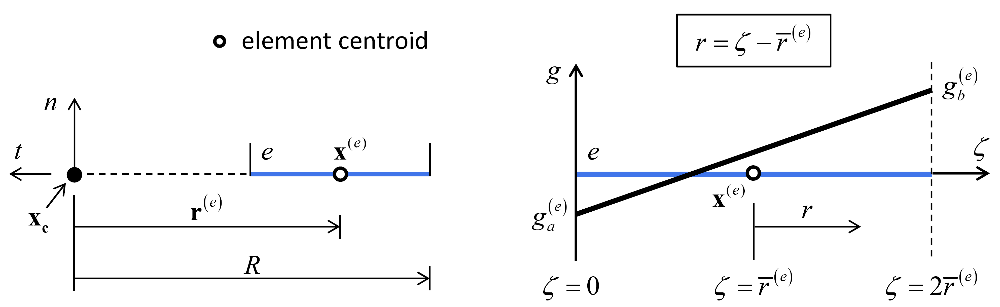
图 14：界面间隙在典型二维单元上的变化。
单元被归入以下三种情形之一（按顺序）：(1) 间隙在单元内改变符号（\(g_{a}^{\left(e\right)} g_{b}^{\left(e\right)} <0\)）；(2) 间隙保持为正或零 \(\left(g_{a}^{\left(e\right)} \ge 0{\rm \; and\; }g_{b}^{\left(e\right)} \ge 0\right)\)；或 (3) 间隙保持为负（\(g_{a}^{\left(e\right)} \le 0\) 和 \(g_{b}^{\left(e\right)} \le 0\)）。
式 (30) 中的积分在单元系中表示为
其中式 (17) 中界面法向应力的 \(g\left(r\right)\) 项通过式 (31) 表示。这些积分对每种情形解析计算，得到（对 \(g_{a}\)、\(g_{b}\) 和 \(\bar{r}\) 项省略上标 \(\left(e\right)\) 记法）：
对三维模型，假定单元上的法向应力为常数，且等于其在单元形心处的值[4]，从而
其中 \(g^{\left(e\right)}\) 是在单元形心处计算式 (10) 得到的单元形心间隙。
使用与验证示例
“岩石试验（Rock Testing）”示例应用演示了使用 线性平行粘结（linear parallel bond） 和 平节理（flat joint） 接触模型对简单 BPM 施加压缩和拉伸强度试验。
尾注
| [1] | 裂纹在三维模型中为圆盘，在二维模型中为厚度为单位长度的线段。裂纹具有破坏模式（拉伸或剪切）和几何信息（尺寸、位置、法向方向和间隙）。尺寸为单元半径（即与单元面积相等的圆的半径）的两倍；对二维模型则为单元长度。位置、法向和间隙会随粘结破坏后的材料运动而更新。裂纹由裂纹监测包显示（见 [Potyondy2017] 中“裂纹监测”一节）。 |
| [2] | 该运动学公式近似描述两个名义表面的运动，每个名义表面与其所属体的一个片体刚性连接。当前公式的一个局限是：当以平节理接触连接的两个体沿切向相对移动时，界面间隙会增大（因为 \(g_s\) 增大）。通过引入在上述条件下不旋转的替代界面坐标系，或许可以消除这一局限。 |
| [3] | 假定由相对扭转转动产生的剪应力在单元上为常数，且等于其在单元形心处的值。这一假定带来的不准确之处是：绕单元形心的扭转力矩为零。实际上，由相对扭转转动产生的界面剪应力在单元上呈线性变化，使绕单元形心的扭转力矩不为零。因此，随着离散化加密，界面中心处的扭转力矩从下方收敛到正确值。三维平节理模型的弯曲力矩也存在类似的假定和相应的不准确性。 |
| [4] | 该假定带来的不准确之处是：绕单元形心的弯曲力矩为零。界面法向应力实际上在单元上呈线性变化，使绕单元形心的弯曲力矩不为零。因此，随着离散化加密，界面中心处的弯曲力矩从下方收敛到正确值。三维平节理模型的扭转力矩也存在类似的假定和相应的不准确性。 |
模型概要
平节理接触模型方法的字母顺序列表见此处（here）。 平节理接触模型属性的字母顺序列表见此处（here）。
参考文献
| [Potyondy2017] | (1, 2, 3) Potyondy, D. O. “Material-Modeling Support in PFC [fistPkg25],” Itasca Consulting Group, Inc., Technical Memorandum ICG7766-L (March 16, 2017), Minneapolis, Minnesota. |
| [Potyondy2016] | Potyondy, D. (2016) “Flat-Joint Contact Model [version 1],” Itasca Consulting Group, Inc., Minneapolis, MN, Technical Memorandum 5-8106:16TM47, October 12, 2016. |
| [Potyondy2013] | Potyondy, D. (2013) “PFC3D Flat-Joint Contact Model (version 1),” Itasca Consulting Group, Inc., Minneapolis, MN, Technical Memorandum ICG7234-L, June 25, 2013. |
| [Potyondy2012a] | Potyondy, D. (2012a) “PFC2D Flat-Joint Contact Model,” Itasca Consulting Group, Inc., Minneapolis, MN, Technical Memorandum ICG7138-L, July 26, 2012. |
| [Potyondy2012b] | Potyondy, D.O. (2012b) “A Flat-Jointed Bonded-Particle Material for Hard Rock,” paper ARMA 12-501 in Proceedings of 46th U.S. Rock Mechanics/Geomechanics Symposium, Chicago, USA, 24–27 June 2012. |
| 这些内容对您有帮助吗？… | FLAC3D © 2019, Itasca | 原文更新于 2020 年 10 月 8 日 |